A desktop SQL client for developers, DBAs and analysts who work with several databases in a day.
One small app runs queries, browses and edits data, designs tables, explains slow statements and documents schemas, and keeps production connections clearly apart from the others.
- Runs on
- Windows, macOS, Linux
- Built with
- Rust core, Tauri 2 + React
- Start to interactive window
- 430–500 ms
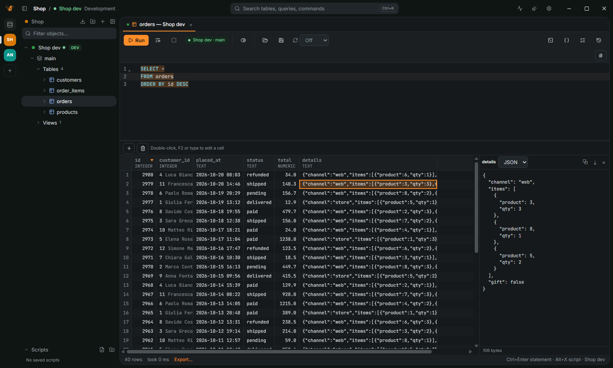
At a glance
- Browse data
- A canvas grid that reads rows a page at a time. A click on a header sorts on the server and writes the
ORDER BYin the editor; quick filters, a value panel for JSON, XML and images, foreign keys shown by the name of the row they point to. - Edit data safely
- Change cells in place, preview the SQL, save all or nothing, and get an undo script for every save.
- Write SQL
- Completion of the tables, columns and aliases in scope and of JOINs from the foreign keys, a formatter, parameters, snippets, a linter, a split editor and saved scripts.
- Know the schema
- Object details, local notes and tags on tables and columns (
#piiin the navigator's filter), the database's own comments, and documentation as Markdown or a single HTML file with an ER diagram. - Design and tune
- A table editor that shows its
ALTER TABLEfirst, a visual query builder, query plans with a heatmap and index suggestions, and a query manager with the time of every statement. - Move data around
- Import and export CSV, JSON, Parquet, Excel and more, copy tables and whole schemas between any two databases, generate fake rows.
- Production-aware
- Connection types with the color of the window frame, confirmations before risky statements, SSH tunnels, keychain or encrypted passwords.
- Organized
- Projects in a rail, tabs that pin and group, a command palette, Settings in tabs with a search, dark and light themes, English and Italian.
- Agent-ready
- MCP clients can use your saved connections, with the access you give each one.
In more detail
Connections
- A new connection starts from a grid of database logos with a search on top. Paste a
postgres://,mysql://,sqlserver://,clickhouse://,libsql://ormongodb://URL to fill the form. - Import connections from DBeaver, DataGrip, pgAdmin and
pg_service.conf, with their folders. - TLS with libpq
sslmodesemantics and client certificates; SSH tunnels with a password, a key or the SSH agent, optionally through a jump host. - Passwords from the system keychain, asked every time, read from
.pgpassor printed by a shell command. A master password can keep the saved ones in an encrypted file (Argon2id and AES-256-GCM).
SQL editor
- Run the statement under the cursor (Ctrl+Enter) or the whole script (Alt+X); errors are pointed out in the text.
- Completion offers the columns of the tables the statement reads, even when FROM comes later.
JOINoffers the related tables with alias and condition from the foreign keys. - Formatter (Ctrl+Shift+F), parameters (
:id,?) and variables (${name}), snippets, query history and.sqlfiles. - A linter marks unknown columns, joins without a condition and
SELECT *on production. - Split editor (Ctrl+Shift+D) and saved scripts per project, with folders.
Results and the data viewer
- The grid is drawn on a canvas and reads rows a page at a time; queries can be cancelled.
- A click on a column header writes the
ORDER BYin the editor and runs it again; quick filters on the focused value go in the editor'sWHERE. - Copy with headers or as CSV, JSON, Markdown, HTML, SQL
INSERTor anINlist. - Value panel (F7): long text, JSON and XML formatted, hex and images from binary columns.
- Foreign keys open the row they point to; a map panel draws PostGIS, MySQL and WKT geometries.
Data editor
- Change cells in place (double-click, F2 or just type), set NULL or the default, add, duplicate and delete rows. Changes stay highlighted until you save.
- Preview the SQL and save it all or nothing. Every save leaves an undo script that puts the rows back.
- Paste cells from a spreadsheet or CSV over the grid or as new rows.
Notes, comments and schema docs
- Notes and tags on tables, views and columns, kept on your computer and never written to the database.
- The database's own comments show beside the notes, and edit with the statement shown first.
- Export a schema's documentation as Markdown or a single HTML file that works offline, with an ER diagram.
Design and tune
- Table editor for columns, indexes, foreign keys, UNIQUE and CHECK constraints; saving shows the
CREATE TABLEorALTER TABLEscript first. - Visual query builder: drag tables onto a canvas and they join on their foreign keys.
- Query plans (Ctrl+Shift+E) as a tree. Explain analyze runs the statement for actual rows and times, then rolls back what it changed; a heatmap tints each step by its share of the time.
- Query manager (Ctrl+Shift+M): every statement the app sent, with connection, duration, rows and outcome, and a trace split into network, server and fetch.
Import, export and transfer
- Export to CSV, JSON, NDJSON, Parquet, Excel, SQL
INSERT, Markdown, HTML or XML, streamed to the file, optionally compressed and uploaded to an S3, GCS, R2 or MinIO bucket. - Import CSV, TSV, JSON, NDJSON, Parquet and Excel into a table, with a preview and a mapping of columns.
- Copy a table or a whole schema to another database, PostgreSQL to MySQL, SQL Server to SQLite and every other pair.
- Fake rows for a table; drop a CSV, JSON, Parquet or Excel file on the window to query it with SQL.
Transactions and safety
- Connection types with their color on the window frame: development, test and production. Production opens in manual commit.
- An
UPDATEorDELETEwithoutWHERE, or aTRUNCATE, asks first and says about how many rows it changes. - On production connections every change is listed and confirmed before it runs.
- An open transaction shows how long it has been open and warns after a while.
Workspace
- Projects in a rail on the left, each with only its connections, tabs and recent queries.
- Command palette (Ctrl+K): actions, connections, tables and recent queries.
- Tabs that pin and group under their connection; Ctrl+Shift+T reopens the last closed one.
- Platypus Dark and Light and other themes, your own colors, interface size and corner radius; English or Italian. Every shortcut can be changed.
Screenshots
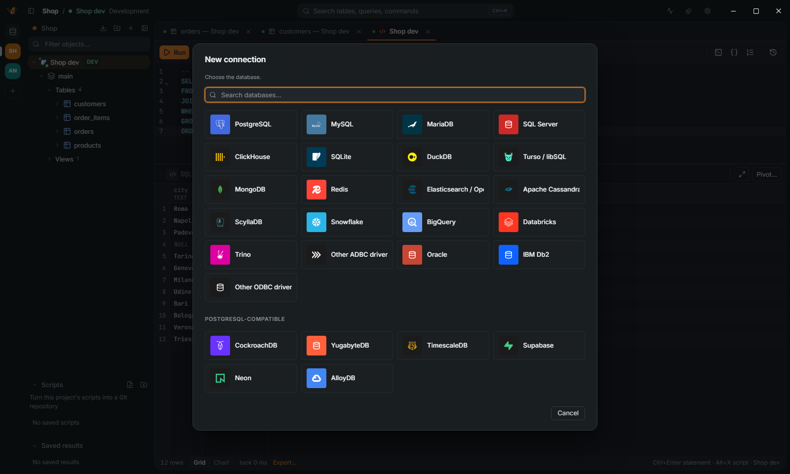

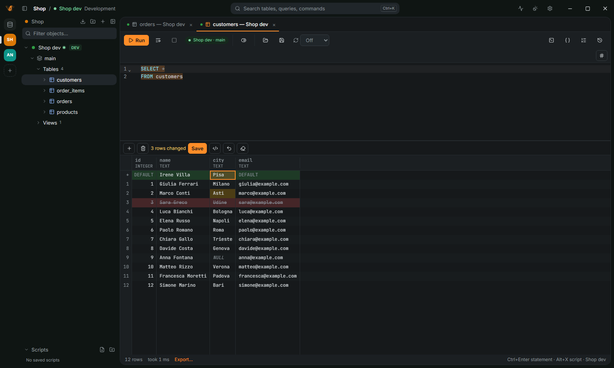
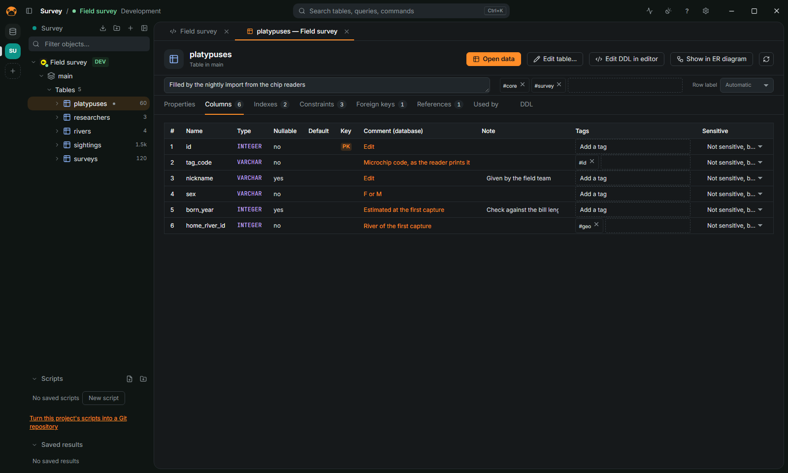
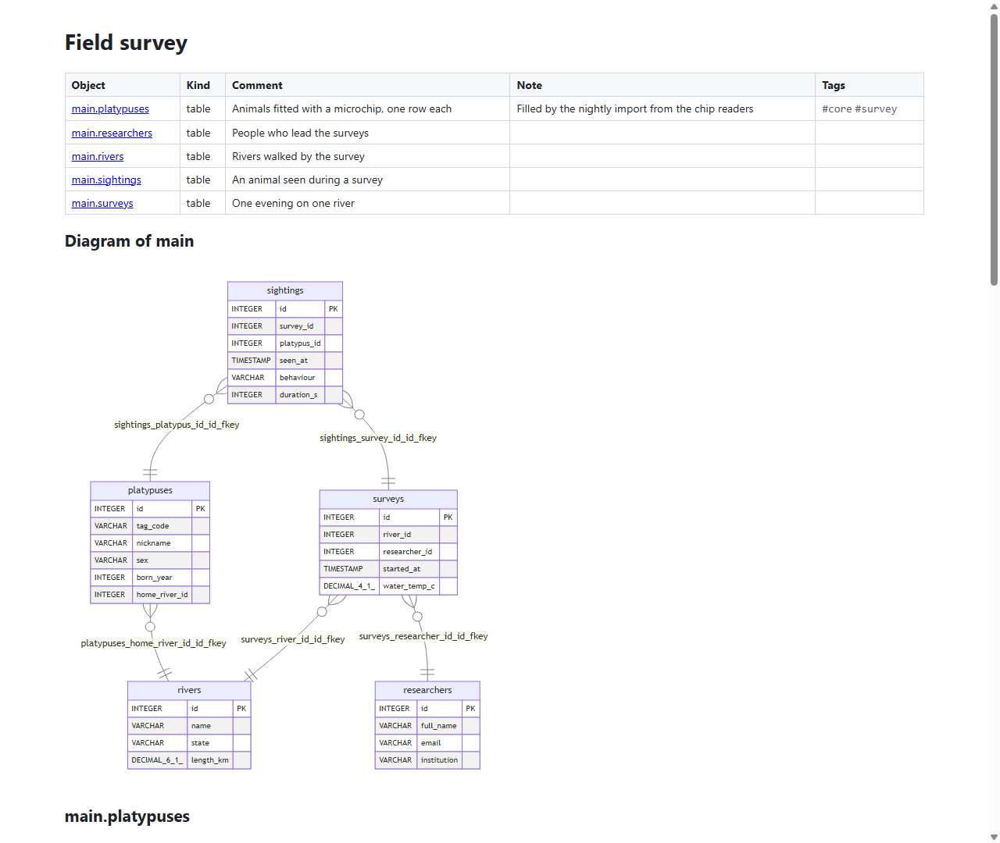
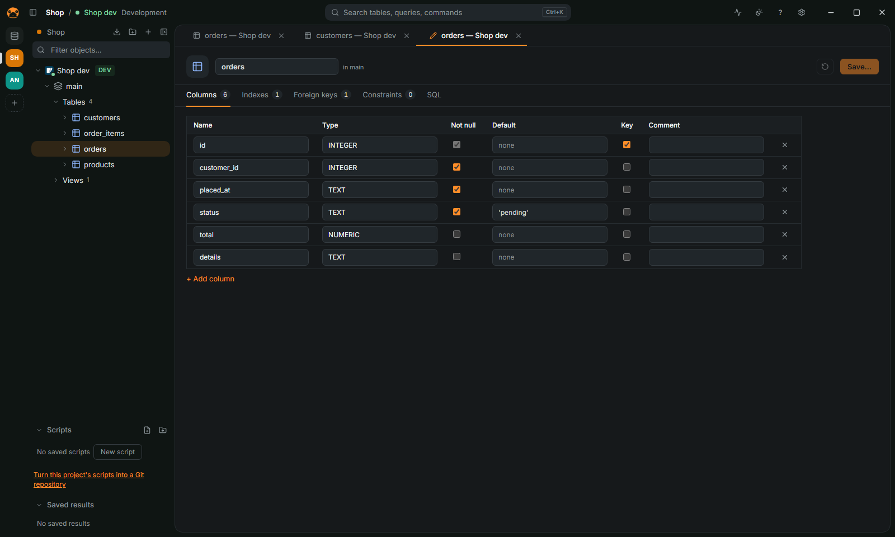
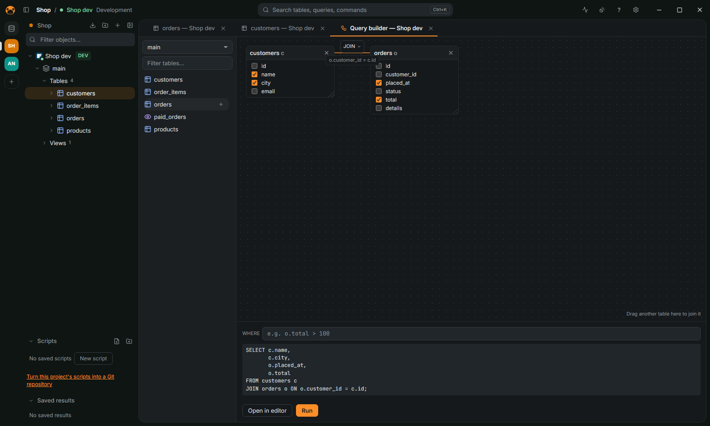
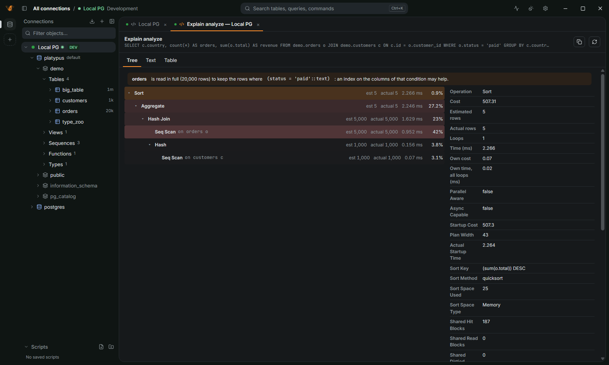
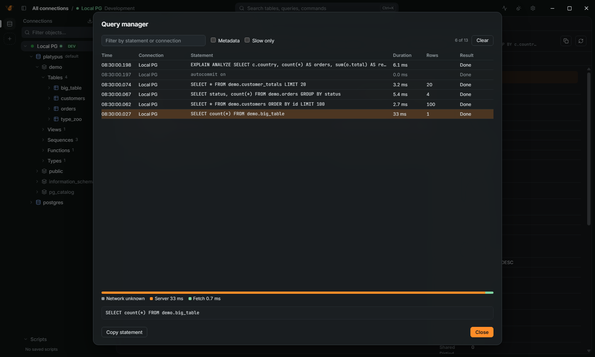
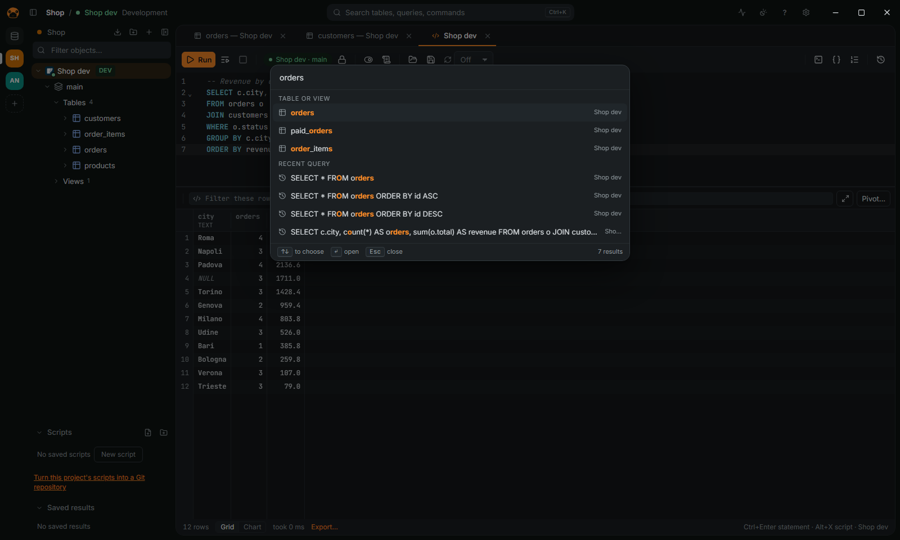
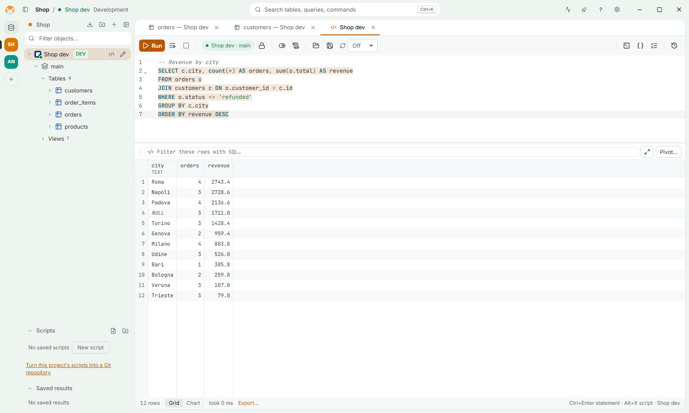
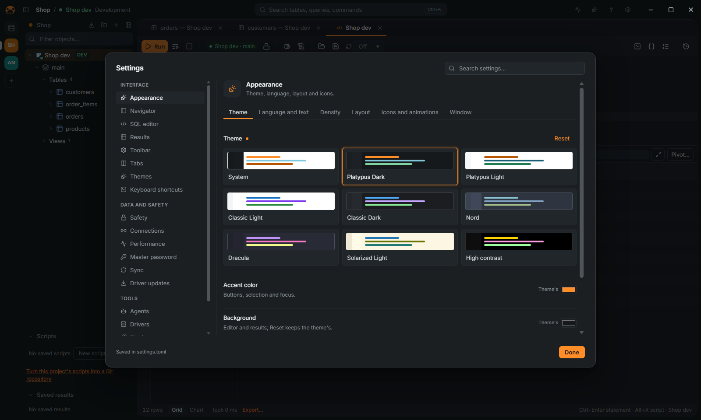
Databases
PostgreSQL, MySQL, MariaDB, SQL Server (and Azure SQL), Oracle, ClickHouse, SQLite, DuckDB, libSQL/Turso and MongoDB; the servers that speak the PostgreSQL protocol; Snowflake, BigQuery, Databricks and Trino through ADBC; and on Windows IBM Db2 and any ODBC data source.
| database | connects_through | notes |
|---|---|---|
| PostgreSQL | native protocol | Several databases per connection, partitions, PostGIS, arrays and composite types |
| MySQL, MariaDB | native protocol | NULL |
| SQL Server, Azure SQL | TDS | TOP (n), [names], several result sets |
| Oracle | Oracle Instant Client, downloaded on first use | PL/SQL blocks, real cancel, navigator, DDL |
| ClickHouse | HTTP interface, Arrow results | Browsed, queried and designed; no data editing in the grid |
| SQLite | embedded | NULL |
| DuckDB | embedded, Arrow results | Also opens CSV, JSON, Parquet and Excel files as databases |
| libSQL / Turso | Hrana over HTTP | Token in the password or in authToken |
| MongoDB | official driver | mongosh syntax; no transactions, explain or data editing |
| CockroachDB, YugabyteDB, TimescaleDB, Supabase, Neon, AlloyDB | PostgreSQL driver | Profiles with their default port, user, database and SSL |
| Snowflake, BigQuery, Databricks, Trino | ADBC driver, downloaded on first use | Queries, results, navigator and completion; no data editing, explain or manual commit yet |
| Any database with an ADBC driver | the ADBC driver library you choose | Its URI and options as the driver documents them |
| IBM Db2 | IBM's ODBC driver, installed on first use | Windows |
| Any ODBC driver or DSN | the system's ODBC driver manager | Windows |
Drivers downloaded on first use are checked against their SHA-256 and kept with the app's data; Settings › Drivers lists and removes them.
Agents and the CLI
MCP clients use your saved connections through platypus-mcp, an MCP server they start themselves; the app need not be open.
- Each connection gives agents no access, read only (the default) or read and write; production and read-only connections are never more than read only.
- Passwords stay in the keychain, and no answer shows a host, a user or a secret.
- Agents' queries are in the history with the agent's name.
Agents without MCP use the platypus CLI, which follows the same access and prints one JSON document.
# list the saved connections
platypus connections
# tables of a schema, then a query
platypus --connection "Local PG" objects --schema demo
platypus --connection "Local PG" query \
"select * from demo.orders" --max-rows 50Performance
| measure | platypusdb 0.1.0 | target |
|---|---|---|
| Start to interactive window | 430–500 ms | < 500 ms |
| Memory at rest, 1 connection | about 130 MB | < 150 MB |
| Scrolling 1M rows | 178 fps | 60 fps |
| 5M rows to Parquet | 3.2 s, 31 MB peak | streaming |
| Installer | 5.4 MB | < 20 MB |
Windows 11, Ryzen 7 9700X; details and method in BENCHMARKS.md.
Next to other clients
| platypusdb | dbeaver ce | datagrip | tableplus | beekeeper studio | |
|---|---|---|---|---|---|
| Runtime | Rust, the system's web view | Java, JRE bundled | Java, JetBrains Runtime bundled | Native (GTK on Linux) | Electron |
| Linux download | 19.5 MiB | 122 MiB | 1,047 MiB | 60 MiB | 346 MiB |
| On disk | 46 MiB | 206 MiB | not measured | 180 MiB | 1,105 MiB |
| License | AGPL-3.0 | Apache 2.0 | Proprietary | Proprietary | GPLv3 |
Official Linux downloads of PlatypusDB 0.2.0, DBeaver CE 26.2.3, DataGrip 2026.2.6, TablePlus 2.2.0 and Beekeeper Studio 6.2.0, measured on 29 October 2026. Start and memory side by side are still to be measured.
Download
Download the installer for your system from the releases page. The app updates itself.
- Windows
.exe.msi - macOS
.dmg - Linux
.AppImage.deb.rpm
Docs
- READMEThe overview, in English and Italian.
- FeaturesEvery feature, area by area. Also shortcuts and agents and the CLI.
- BenchmarksHow the performance figures are measured.
- ExtendingHow features plug in: actions, tab kinds, settings, driver capabilities.
- RoadmapWhat comes next.
- ReleasingHow releases are made.
- Source codeThe repository on GitHub.